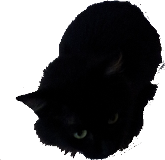

Your browser doesn't support the features required by impress.js, so you are presented with a simplified version of this presentation.
For the best experience please use the latest Chrome, Safari or Firefox browser.
Geonetwork & GeoCat Bridge: Acceso a datos geoespaciales en una infraestructura de datos INSPIRE
María Arias de Reyna
José García
- Quienes somos y qué hacemos aquí
- GeoNetwork: ese gran desconocido
- Últimas novedades
- GeoCat Bridge
Quienes somos y Qué hacemos aquí
Venimos de parte de @geocat_bv

GeoCat es una compañia especializada en la implementación y soporte de Infraestructuras de Datos Espaciales basadas en GeoNetwork opensource.

Además disponemos de Bridge, una extensión para ArcMap que facilita la publicación de datos geoespaciales en servidores de datos libres

-
- GeoNetwork: ese gran desconocido
- Últimas novedades
- GeoCat Bridge
GeoNetwork: ese gran desconocido
(en España)
Software para publicar datos a través de metadatos
Catálogo de Metadatos
Administración y edición de datos sencilla
Basado en estándares (OGC, ISO)
Centrado en datos espaciales
Interoperable (CSW, RSS, Harvesting,...)

GeoNetwork: ese gran desconocido

GeoNetwork: ese gran desconocido

GeoNetwork: ese gran desconocido

-
-
- Últimas novedades
- GeoCat Bridge
Últimas Novedades
Versión 2.8 estable -> 2.9 trunk
- "Librerías" de elementos (Directorios)
- Logos asociados a elementos
-
-
-
-
-
-
-
-
-

GeoNetwork: ese gran desconocido
Últimas Novedades
Versión 2.8 estable -> 2.9 trunk
- "Librerías" de elementos (Directorios)
- Logos asociados a elementos
- Buscar en las Estadísticas
- Administrador del Tesauro
- Histórico del Harvesting
- Harvesting desde SOS (OGC)
- Seguridad bajo Spring
- Integración con GeoServer
- Soporte para Perfiles de Metadatos (mejorado)
- Validaciones Persistentes
- Optimizaciones etc...
Últimas Novedades
- En desarrollo:
- Clustering
- Faceted Search
- Más integración con Spring
- Búsqueda geográfica mejorada
- ...
GeoCat Bridge
- Extensión ArcGIS que permite publicar desde ArcGIS a plataformas libres:
- GeoServer
- GeoNetwork
- MapServer!!*
- PostGIS
-

GeoCat Bridge
- Metadatos
- Publicación en GeoNetwork opensource y servidores CSW 2.0.2 (siguiente versión).
- Soporte para perfiles de metadatos: INSPIRE, Dutch Profile.
- Extensible para soportar otros perfiles.
- Datos
- Publicación en GeoServer/MapServer
- Publicación de los datos en formato shapefile o PostGis.
- Publicación de la simbología en formato nativo (SLD/Mapserver).
-
GeoCat Bridge
GeoCat Bridge
GeoCat Bridge
Gracias por vuestra atención
¿Dudas, preguntas?
Nos vemos en un rato en el tutorial de 30 minutos

@geocat_bv